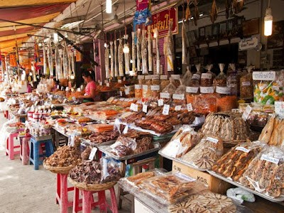
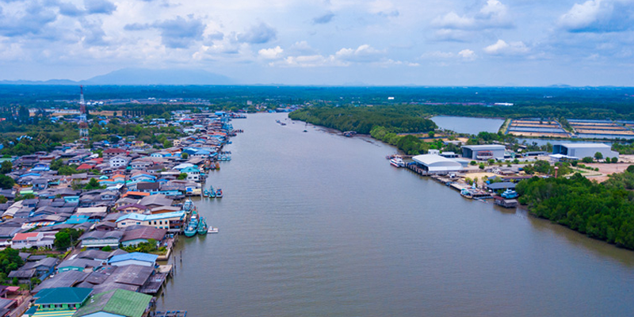

บ้านเพ

จุดเริ่มต้นของการเดินทางและเรื่องราวของชุมชนชายฝั่ง บ้านเพเป็นพื้นที่สำคัญของจังหวัดระยอง โดยเฉพาะในด้านการเดินทางท่องเที่ยวทางทะเล นักท่องเที่ยวจำนวนมากรู้จักบ้านเพในฐานะจุดเชื่อมต่อก่อนเดินทางไปยังเกาะเสม็ด แต่บ้านเพไม่ได้มีความสำคัญเฉพาะเรื่องการเดินทางเท่านั้น พื้นที่แห่งนี้ยังสะท้อนวิถีชีวิตของเมืองชายฝั่ง ผ่านตลาด ร้านค้า ผลิตภัณฑ์จากทะเล และของฝากท้องถิ่น นักท่องเที่ยวที่มาเยือนบ้านเพสามารถพบเห็นบรรยากาศของชุมชน การค้าขาย และผลิตภัณฑ์ที่เกิดจากทรัพยากรทางทะเล อาหารทะเลสด อาหารแปรรูป และของฝากหลายชนิด ล้วนสะท้อนความสัมพันธ์ระหว่างคนในพื้นที่กับทะเล การนำบ้านเพมาไว้ในเว็บไซต์ท่องเที่ยวจึงสามารถทำได้หลายมุม ทั้งในฐานะ “ประตูสู่เกาะเสม็ด” “แหล่งอาหารทะเล” และ “พื้นที่เรียนรู้วิถีเมืองชายฝั่ง”
ปากน้ำประแส

วิถีชุมชนริมสายน้ำ ปากน้ำประแสเป็นชุมชนที่มีวิถีชีวิตสัมพันธ์กับทะเลและสายน้ำมาอย่างยาวนาน บรรยากาศของเรือ บ้านเรือน ชุมชน และอาชีพของผู้คนในพื้นที่สะท้อนให้เห็นว่าทรัพยากรธรรมชาติไม่ได้เป็นเพียงสถานที่ท่องเที่ยว แต่ยังเป็นส่วนหนึ่งของการดำรงชีวิต นักท่องเที่ยวที่เดินทางเข้ามาในพื้นที่สามารถเรียนรู้วิถีประมง การใช้ทรัพยากรชายฝั่ง และเรื่องราวของคนในชุมชนได้ การท่องเที่ยวแบบนี้ทำให้ผู้มาเยือนได้เห็นชีวิตจริงของผู้คน มากกว่าการชมวิวจากภายนอก นอกจากนี้ นักท่องเที่ยวยังสามารถเชื่อมการเดินทางจากชุมชนปากน้ำประแสไปยังทุ่งโปรงทองและสถานที่ใกล้เคียงได้ พื้นที่จึงเหมาะกับการท่องเที่ยวแบบค่อย ๆ เรียนรู้ ไม่เร่งรีบ และเปิดใจรับฟังเรื่องราวของชุมชน แนวคิดเช่นนี้สอดคล้องกับการท่องเที่ยวสร้างสรรค์ เพราะผู้เดินทางไม่ได้เป็นเพียงผู้ชม แต่ได้เข้าใจความสัมพันธ์ระหว่างธรรมชาติ อาชีพ และวัฒนธรรมของพื้นที่
back